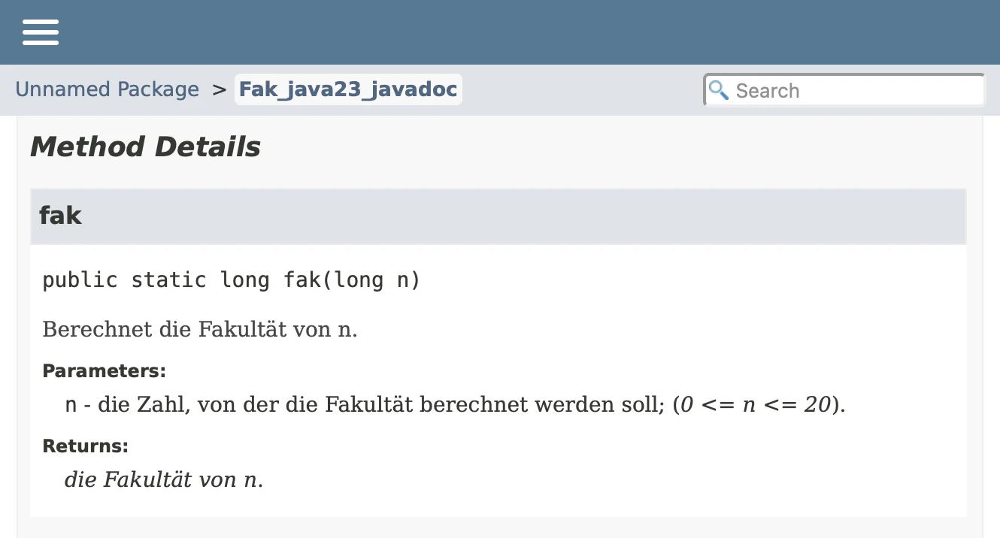

Bei der Erstellung der Unterlagen wurden KI Assistenten (insbesondere Claude
aber ggf. auch ChatGPT, Ollama mit Gemma/LLama/Qwen oder OpenCode mit
Kimi/Qwen/Deepseek...) unterstützend eingesetzt.
Dies erfolgte insbesondere zur Unterstützung bei der Generierung von Grafiken
(d. h. SVG Dateien), oder um sich Übersichtstabellen generieren zu lassen.
Weiterhin wurde KI zur allgemeinen Qualitätssicherung eingesetzt.
Inhalte, die ggf. von der KI vorgeschlagen wurden, wurden im Falle der
Übernahme explizit validiert und angepasst.
Die Ausführung des Programms ist (in der Konsole/im Terminal) mit java HelloWorld.java möglich.
Die Datei enthält ein einfaches Java-Programm, das den Text Hello World! auf der Konsole ausgibt.
In der ersten Zeile wird die Methode main definiert. Diese ist die Einstiegsmethode in das Programm. Der Text Hello World! wird mit der Methodeprintln auf der Konsole ausgegeben. IO.print(...), und IO.println(...) sind in Java-Skripten immer verfügbar und geben den übergebenen Text auf der Konsole aus. Die Methode print tut dies ohne und die Methode println mit Zeilenumbruch (\\n) am Ende.
1voidmain(){2IO.println("Hello "+IO.readln("What is your name? "));3}
Mit Hilfe von readln können Sie von der Konsole lesen. In Java-Skripten ist readln immer verfügbar. Das Programm gibt den Text Hello gefolgt von dem eingegebenen Text aus. Die Methode readln gibt erst den übergebenen String aus und liest dann eine Zeile von der Konsole ein. Der eingelesene Text wird dann an das Wort "Hello " angehängt (mittels des "+" Operators) und als ganzes zurückgegeben.
Ausführung von Java-Skripten
Java-Skripte können direkt mit java <Datei mit Sourcecode> ausgeführt werden.
Java-Skripte können auf unixoiden Betriebssystemen (insbesondere Linux, MacOS, BSD) auch direkt ausgeführt werden, wenn sie ein Shebang (#!) in der ersten Zeile enthalten, die Datei nicht mit .java endet und die Dateirechte (ausführbar) entsprechend gesetzt sind (Auf Unixoiden: -rwxr-xr-x ... HelloWorldScript):
1#!/usr/bin/env java --source 272// RECALL: THE FILENAME MUST NOT END WITH ".java" ACCORDING TO JEP 330!34voidmain(){5IO.println("Hello World!");6}
Übung - mein erstes Programm
Lesen von und Schreiben auf die Konsole
Schreiben Sie ein Java-Programm (GutenMorgen.java), das erst nach dem Namen des Nutzers X fragt und dann Guten Morgen X! auf der Konsole ausgibt. Beachten Sie dabei, dass der Text X durch den eingegebenen Namen ersetzt wird und am Ende ein Ausrufezeichen steht.
Als Zweites soll dasselbe Programm dann nach dem Wohnort Y des Nutzers fragen und dann Y ist wirklich schön! auf der Konsole ausgeben.
Zur Ausführung der vorhergehenden Programme mussten Sie immer den Java Interpreter starten und das Programm ausführen. Stellen Sie Ihr letztes Programm so um, dass eine direkte Ausführung - wenn Java korrekt installiert ist - möglich ist.
Beispielausführung auf der Kommandozeile:
1$ ./GutenMorgen
2Wie ist Dein Name? Michael
3Hallo Michael!4Wo wohnst Du? In einem schönen Ort
5In einem schönen Ort ist wirklich schön!
Dienen der Berechnung von Werten mit Hilfe von Variablen, Literalen und Operatoren.
Kontrollstrukturen:
Dienen der Ablaufsteuerung mit Hilfe von Schleifen (while, do-while, for) und Verzweigungen (if-else, switch-case).
Unterprogramme:
Methoden (Prozeduren und Funktionen), die eine bestimmte Funktionalität wiederverwendbar bereitstellen.
Kommentare
Kommentare dienen der Dokumentation des Codes und helfen anderen Entwicklern den Code zu verstehen.
In Java unterscheiden wir folgende Arten von Kommentaren:
Einzeilige Kommentare, die mit // beginnen und bis zum Ende der Zeile gehen.
Mehrzeilige Kommentare, die mit /* beginnen und mit */ enden.
Kommentare, die mit /** beginnen und mit */ enden, sind so genannte JavaDoc Kommentare und dienen der Erzeugung von Dokumentation.
[ab Java 23] Mehrzeilige Kommentare, bei der jede Zeile mit /// beginnt, werden als Markdown basierte JavaDoc Kommentare interpretiert.
Beispiel (ab Java 1.0 - spezifische Tags und HTML)
1/** 2 * Berechnet die Fakultät von n. 3 * 4 * @param n die Zahl, von der die Fakultät berechnet werden soll; (0 <= n <= 20). 5 * @return die Fakultät von n. 6 */ 7longfak(long n){// TODO mögliche Fehlerfälle abfangen 8/* Die Verwendung von long als Datentyp limitiert uns auf n <= 20; 9 durch den wechsel von long auf double könnten wir bis n <= 170 rechnen;10 sind aber unpräziser. */11if(n ==0)return1;12elsereturn n *fak(n-1);13}
Beispiel (ab Java 23 - spezifische Tags und Markdown)
1/// Berechnet die Fakultät von n. 2/// 3/// @param n die Zahl, von der die Fakultät berechnet werden soll;/ 4/// (*0 <= n <= 20*). 5/// @return _die Fakultät von n_. 6longfak(long n){// TODO mögliche Fehlerfälle abfangen 7/* Die Verwendung von long als Datentyp limitiert uns auf n <= 20; 8 durch den wechsel von long auf double könnten wir bis n <= 170 rechnen; 9 sind aber unpräziser. */10if(n ==0)return1;11elsereturn n *fak(n-1);12}
Erzeugte Dokumentation (mit Java 23)

JavaDoc tags
@param <name descr>:
Dokumentiert einen Parameter einer Methode.
@return <descr>:
Dokumentiert den Rückgabewert einer Methode.
Java Shell
Die Java Shell (jshell) ist ein interaktives Werkzeug, das es ermöglicht Java-Code (insbesondere kurze Snippets) direkt auszuführen.
Starten Sie die Java Shell mit dem Befehl jshell in der Konsole.
Den gültigen Java-Code können Sie direkt in der Java Shell eingeben oder über /edit als Ganzes bearbeiten.
Sie beenden die Java Shell mit dem Befehl /exit.
Die Java Shell eignet sich insbesondere für das Ausprobieren von Code-Schnipseln und das Testen von Methoden.
1# jshell
2 3|WelcometoJShell--Version27 4|For an introduction type:/help intro
5 6jshell>var x ="X"; 7x ==>"X" 8 9jshell> x +"Y"10$2==>"XY"1112jshell> $2.length()13$3==>2
Übung - Java als Taschenrechner
Rechnen auf der Konsole
Verwenden Sie die JShell als Taschenrechner und lösen Sie die folgenden Aufgaben in der angegebenen Reihenfolge jeweils mit Hilfe von einer Formel:
Berechnen Sie, wie viele Sekunden ein Schaltjahr hat.
Sie nehmen einen Kredit über 47865 € auf und zahlen monatlich 3,6% Zinsen. Wie viele Zinsen haben Sie nach 5 Jahren bezahlt?
Ein Bauer hat 120 Äpfel. Er möchte die Äpfel gleichmäßig auf 4 Körbe verteilen. Nachdem er die Äpfel aufgeteilt hat, isst er 5 Äpfel aus jedem Korb. Wie viele Äpfel hat er noch?
Nehmen Sie an, dass weltweit jeden Tag 1 500 000 000 Plastikflaschen produziert werden. Wie viele Flaschen werden in einem Jahr produziert, wenn das Jahr 365 Tage hat, aber an den Wochenenden nicht produziert werden würde (gehen Sie von 52 Wochenenden aus)?
Zum Starten der JShell müssen Sie die Konsole (ein Terminal) öffnen und jshell eingeben.
Primitive Datentypen
Arten und Verwendung von Datentypen
Um die erlaubten Werte von Parametern, Variablen und Rückgabewerten genauer spezifizieren zu können, werden Datentypen verwendet. Java stellt hierzu (unter anderem) primitive Datentypen zur Verfügung.
Ein primitiver Datentyp ist z. B. int (d. h. integer bzw. Ganzzahl).
Dieser Datentyp legt fest, dass ein Wert eine Ganzzahl mit dem Wertebereich: [-2147483648,2147483647] ist.
Alle von Java unterstützten primitiven Datentypen
Art
Datentyp
Beispiel
Ganzzahlen
byte, short, int, long
123
Fließkommazahlen
Floating-Point Numbers
float, double
1.23 oder 3.141d
Zeichen
char
'a'
Wahrheitswerte
boolean
true
Bitte beachten Sie, dass in Code für Zahlen immer die englische Schreibweise verwendet wird. D. h. das Dezimalkomma wird durch einen Punkt ersetzt.
Java kennt neben den primitiven Datentypen auch noch Arrays, Aufzählungen (enum) sowie Klassen und Interfaces. Diese werden wir später behandeln.
Ganzzahlige Datentypen - Hintergrund
Ganzzahlige Werte werden im Speicher als Binärzahlen gespeichert; d. h. als Folge von Nullen und Einsen.
Um verschieden große Werte zu speichern, stellen Programmiersprachen ganzzahlige Werte mit einer unterschiedlichen Zahl von Bits dar.
Zahlen werden immer mit 8 Bit (1 Byte), 16 Bit (2 Byte), 32 (4 Byte) oder 64 Bit (8 Byte) gespeichert.
Umrechnung Binär-Dezimal
Binär
Dezimal
00000000
+0
00000001
+1
...
...
01111111
+127
10000000
-128
...
...
11111111
-1
Datentyp
Genauigkeit (in Bit)
Wertebereich
Anzahl Werte
byte
8
-128 bis 127
2⁸
short
16
-32768 bis 32767
2¹⁶
int
32
-2147483648 bis 2147483647
2³²
long
64
-922337022036854775808 bis 922337022036854775807
2⁶⁴
Die Größenwahl für long und int ist teilweise historisch bedingt. Auf gängigen Prozessoren sind jedoch 64 Bit und 32 Bit die natürlichen Größen für Ganzzahlen und können effizient verarbeitet werden.
Für das Vorzeichen wird das erste Bit verwendet, für Mantisse und Exponent werden zusammen 31- (bei float) bzw. 63-Bit (bei double) verwendet.
Die Mantisse und der Exponent sind vorzeichenbehaftete Ganzzahlen.
Beispiel (vereinfacht)
7×2−1=27=3.5
−7×2−1=2−7=−3.5
7×2−3=87=1.125
7×20=17=7
Datentyp
Genauigkeit
Mantisse
Exponent
Wertebereich
float
32
23
8
ca. -3,4·10³⁸ bis 3,4 · 10³⁸
double
64
52
11
ca. -1,8·10³⁰⁸ bis 1,8 · 10³⁰⁸
Ganzzahlen <224 können bei Verwendung des Datentyps float exakt dargestellt werden; bei double sind es Ganzzahlen <253.
In beiden Fällen gibt es noch die Möglichkeit +/- Unendlich und NaN (Not a Number) zu repräsentieren.
Gleitkommatypen - Verwendung
Für betriebswirtschaftliche Anwendungen gibt es den Datentyp BigDecimal. Dieser ist aber kein primitiver Datentyp und wird später behandelt.
Zeichen - Hintergrund
einzelne Zeichen (z. B. 'a') werden in Java mit dem Datentyp char dargestellt
ein char ist (intern) eine vorzeichenlose Ganzzahl mit 16 Bit (d. h. eine Zahl im Bereich [0,65536]), die den Unicode-Wert des Zeichens repräsentiert
Alle gängigen (westeuropäischen) Zeichen können mit einem char dargestellt werden.
Für Zeichenketten (z. B. "Hello World") existiert ein nicht-primitiver Datentyp String.
Unicode Zeichen und chars
Hinweise:
0x1F60E ist der Unicode Codepoint von 😎 und Character.toChars(<Wert>) rechnet den Wert um.
In Java ist die Länge (<String>.length()) einer Zeichenkette (String) die Anzahl der benötigten chars und entspricht somit nicht notwendigerweise der Anzahl der (sichtbaren) Zeichen.
die Wahrheitswerte wahr (true) und falsch (false) werden in Java mit dem Datentyp boolean dargestellt
häufigste (explizite) Verwendung ist das Speichern des Ergebnisses einer Bedingungsüberprüfung
(Wahrheitswerte sind zentral für Bedingungsüberprüfungen und Schleifen, werden dort aber selten explizit gespeichert; z. B. beim Test von n auf 0 im Algorithmus für die Berechnung der Fakultät.)
Konvertierung von Datentypen
Die (meist verlustfreie,) implizite Konvertierung von Datentypen ist nur in eine Richtung möglich:
Konvertierungen in die andere Richtung sind immer explizit anzugeben, da es zu Informationsverlust kommen kann
Beispiel: int zu byte (Wertebereich [-128,127])
Bei der Konvertierung von int zu byte werden die höherwertigen Bits (9 bis 32) einfach abgeschnitten.
(byte) 128⇒ -128
(byte) 255⇒ -1
(byte) 256⇒ 0
Beispiel für die verlustbehaftete implizite Konvertierung
jshell>long l =Long.MAX_VALUE-1;
l ==>9223372036854775806
jshell>float f = l
f ==>9.223372E18
jshell> f == l
$1==>true// Warum ?
jshell>((long) f)== l
$2==>false
jshell>((long) f)
$3==>9223372036854775807// == Long.MAX_VALUE
Wahrheitswerte können nicht konvertiert werden.
Literale
Literale - Übersicht
Literale stellen konstante Werte eines bestimmten Datentyps dar.
123_456_789l oder 123456789L ("_" dient nur der besseren Lesbarkeit)
float
0.123456789f oder 0.123456789F
double
0.123456789 oder 0.123456789d oder 0.123456789D
char
'a' (Zeichen-Darstellung) oder 97 (Zahlen-Darstellung) oder
'\u0061' (Unicode-Darstellung) oder Sonderzeichen (siehe nächste Folie)
String
"Hallo" oder
"""
Text-block"""
boolean
true oder false
Textblöcke werden seit Java 15 unterstützt.
Mittels: -Xlint:text-blocks können Sie sich warnen lassen, wenn die Textblöcke potentiell nicht korrekt formatiert sind.
Literale - Sonderzeichen ("\" ist das Escape-Zeichen)
Datentyp
Literal (Beispiele)
\'
Einfaches Hochkomma
\"
Doppeltes Hochkomma
\ \
Backslash
\b
Rückschrittaste (backspace)
\f
Seitenvorschub (form feed)
\n
Zeilenschaltung (line feed)
\t
Tabulator
\r
Wagenrücklauf
Variablen und Konstanten
Variablen - Übersicht
Variablen stellen einen logischen Bezeichner für einen Wert eines bestimmten Datentyps dar.
Variablen müssen erst deklariert werden. Danach können sie weiter initialisiert werden, wenn der Standardwert nicht ausreicht.
Deklaration:
Variablennamen und Datentyp werden festgelegt.
Initialisierung (optional):
Variablen werden mit einem bestimmten Wert versehen.
der Wert einer Variablen kann jederzeit geändert werden
Beispieldeklaration und -initialisierung
1voidmain(){ 2// Deklaration (Datentyp muss konkret angegeben werden) 3int alter; 4// Deklaration und Initialisierung inkl. Datentyp (Standardfall) 5String name ="Asta Mueller"; 6 7// vereinfachte Deklaration mittels var und Initialisierung (seit Java 10) 8// (Datentyp wird inferiert - d.h. abgeleitet aus dem Wert der rechten Seite) 9var geburtsOrt ="Berlin";10var wohnort ="Schönau";11var geschlecht ='d';1213 alter =25;// späte Initialisierung14IO.println(name +"("+ geschlecht +"), "+ alter +" Jahre, aus "+ wohnort);15}
Konstanten - Übersicht
Konstanten sind Variablen, die nach der Initialisierung nicht mehr verändert werden können
Konstanten werden in Java mit dem Schlüsselwort final deklariert
Es wird überprüft, dass keine weitere Zuweisung erfolgt
Konvention: Konstanten werden in Großbuchstaben geschrieben
Beispieldeklaration und -initialisierung
1voidmain(){ 2// Deklaration und Initialisierung inkl. Datentyp (Standarfall) 3finalStringNAME="Asta Mueller"; 4 5// vereinfachte Deklaration mittels var und Initialisierung (seit Java 10) 6// (Datentyp wird automatisch erkannt) 7finalvarWOHNORT="Schönau"; 8finalvarGESCHLECHT='d'; 910IO.println(NAME+"("+GESCHLECHT+"), "+" Jahre, aus "+WOHNORT);1112// name = "Berta"; // error: cannot assign a value to final variable name13}
Bezeichner (Identifier) - Übersicht
Bezeichner sind Namen für Variablen, Konstanten, Methoden, Klassen, Interfaces, Enums, etc.
Erstes Zeichen: Buchstabe, Unterstrich (\_) oder Dollarzeichen ($);
Folgende Zeichen: Buchstaben, Ziffern, Unterstrich oder Dollarzeichen
Groß- und Kleinschreibung wird unterschieden
Schlüsselworte (z. B. var, int, etc.) dürfen nicht als Bezeichner verwendet werden
Konvention:
Variablen (z. B. aktuellerHerzschlag) und Methoden (z. B. println) verwenden lowerCamelCase
Konstanten verwenden UPPER_CASE und Unterstriche (z. B. GEWICHT_BEI_GEBURT)
Klassen, Interfaces und Enums verwenden UpperCamelCase (z. B. BigDecimal)
In Java ist es unüblich, das Dollarzeichen ($) in eigenem Code zu verwenden und es wird in der Regel nur von der JVM (der Java Virtual Machine; d. h. der Ausführungsumgebung) verwendet.
Ein Unterstrich am Anfang des Bezeichners sollte ebenfalls vermieden werden. Ganz insbesondere ist darauf zu verzichten den Unterstrich als alleinigen Variablennamen zu verwenden, da der reine Unterstrich seit Java 22 für unbenannte Variablen verwendet wird und dies die Migration von altem Code erschwert.
Übung - Bezeichner
Welche der folgenden Bezeichner sind (a) ungültig, (b) gültig aber sollten dennoch nicht verwendet werden oder (c) gültig und entsprechen den Konventionen?
Berechnungen erfolgen über Ausdrücke, die sich aus Variablen, Konstanten, Literalen, Methodenaufrufen und Operatoren zusammensetzen.
Jeder Ausdruck hat ein Ergebnis (d. h. Rückgabewert).
Beispiel: (age + 1) addiert zwei Werte und liefert das Ergebnis der Addition zurück.
Einfache Ausdrücke sind Variablen, Konstanten, Literale und Methodenaufrufe.
Komplexe Ausdrücke werden aus einfachen Ausdrücken und Operatoren (z. B. +, -, *, /, %, >, <, >=, <=) zusammengesetzt
Ergebnisse von Ausdrücken können insbesondere Variablen zugewiesen werden (z.B. int newAge = age +1 oder var isAdult = age >=18)
Ausdrücke, die einen Wahrheitswerte ergeben, können zusätzlich in Bedingungen (z. B. if(age +5>=18)...) verwendet werden.
Ausdrücke und Operatoren - Beispiele
1voidmain(){ 2String s =IO.readln("Enter your age: "); 3int age =Integer.parseInt(s); 4 5if(age >=18){ 6IO.println("You are an adult."); 7}else{ 8IO.println("You are a minor."); 9}1011var yearsUntil100 =100-age;12IO.println("You will be 100 in "+ yearsUntil100 +" years.");13}
Operatoren und Operanden in der Mathematik
Binäre/Zweistellige Operatoren (Binary Operators)
Addition
1. Operand1Operator+2. Operand2
Unäre/Einstellige Operatoren (Unary Operators)
Negation
Operator−Operand(2)
Fakultät
Operator2Operand!
Operatoren
Operatoren sind spezielle Zeichen, die auf Variablen, Konstanten und Literale angewendet werden, um Ausdrücke zu bilden.
Die Auswertungsreihenfolge wird durch die Priorität der Operatoren bestimmt.
(Wie aus der Schulmathematik bekannt gilt auch in Java: * oder / vor + und -.)
Runde Klammern können verwendet werden, um eine bestimmte Auswertungsreihenfolge zu erzwingen bzw. dienen zur Strukturierung
Es gibt Operatoren, die auf eine, zwei oder drei Operanden angewendet werden: diese nennt man dann ein-, zwei- oder dreistellige Operatoren.
Für einstellige Operatoren wird die Präfix- oder Postfix-Notation (z.B. ++a oder a++) verwendet,
Für mehrstellige Operatoren wird die Infix-Notation (z.B. a + b) verwendet
Zuweisungs- und Verbundoperatoren (auf alle Datentypen)
Konkatenationsoperator (String)
Explizite Typkonvertierung
Einige Operatoren sind nur auf bestimmten Datentypen anwendbar. So sind Vergleichsoperatoren wie <= oder >= nur auf numerische Datentypen anwendbar, aber == und != auf allen Typen. Es gilt immer, dass die linke und die rechte Seite Typkompatibel sein müssen; mit anderen Worten wir können nur Dinge vergleichen, die den gleichen Typ haben oder für die eine automatische Typumwandlung möglich ist. Ein Vergleich von einem String und einer Zahl ist z. B. nicht möglich.
Beispiel für unzulässigen Vergleich:
jshell>"s"==1| Error:
| bad operand types for binary operator '=='| first type: java.lang.String
| second type: int
|"s"==1
Zweistellige Arithmetische Operatoren
Operator
Anwendung
Bedeutung
+
x + y
Summe von x und y (Additions-Operator)
-
x - y
Differenz von x und y (Subtraktions-Operator)
*
x * y
Produkt von x und y (Multiplikations-Operator)
/
x / y
Quotient von x und y (Divisions-Operator)
%
x % y
Rest der ganzzahligen Division von x und y (Modulo-Operator)
Der Unterschied zwischen & und && ist, dass && nur den rechten Operanden auswertet, wenn der linke Operand true ist.
Der Unterschied zwischen | und || ist, dass || nur den rechten Operanden auswertet, wenn der linke Operand false ist.
Mit anderen Worten bei && und || wird der Ausdruck nur so weit ausgewertet, wie nötig ist, um das Ergebnis des Ausdrucks als Ganzes zu bestimmen.
Übung
Vergleichsoperatoren
Lesen Sie zwei Zahlen von der Console ein (siehe Von der Konsole lesen) und vergleichen Sie diese auf Gleichheit. Speichern Sie das Ergebnis in einer Variable und geben Sie das Ergebnis danach auf der Konsole aus.
Zum Konvertieren der eingelesenen Zeichenketten in Zahlen verwenden Sie die Methode Integer.parseInt(<EINGABE>). Sie können hier den eingelesen String direkt an die Methode übergeben oder vorher in einer Variable speichern.
Denken Sie daran, dass Ihr Code in die main Methode gehört:
<auszuwertender Ausdruck a(c falsch) falls c falsch/unwahr>
liefert in Abhängigkeit eines Ausdrucks c (der einen Wahrheitswert liefert) das Ergebnis des ersten Ausdrucks oder des zweiten Ausdrucks zurück.
c ? a(c wahr) : a(c falsch)
Beide Ausdrücke a(c wahr) und a(c falsch) müssen entweder numerische Werte oder boolean Werte oder Instanzen einer Klasse zurückliefern (d. h. Werte die implizit ineinander konvertiert werden dürfen)
Von den beiden Ausdrücken wird nur ein Ausdruck ausgewertet.
Beispiele
1int n =0;2n ==0?1:2
Verschachtelung ist möglich aber nicht empfehlenswert:
1int alter =Integer.parseInt(IO.readln("Wie alt sind Sie?"));2alter <18?3"jugendlicher":4 alter <65?5"erwachsener":6"senior";
Bitoperatoren
Bitoperatoren (>>, <<, ...) arbeiten auf der binären Darstellung der numerischen, primitiven Datentypen für Ganzzahlen.
Bitoperationen werden häufig für spezielle Algorithmen verwendet, um die gleiche Operation auf mehreren Daten (den Bits) gleichzeitig anzuwenden (1 CPU Zyklus). Ein Beispiel ist das Ver-/Entschlüsseln von Daten (insbesondere mit XOR).
Bestimmte mathematische Operationen (z. B. Division durch 2x) können durch Bitoperationen ersetzt werden, die effizienter sind (z. B. 16/4==16>>2).
Operator
Anwendung
Bedeutung
~
~x
Bitweise-Negation
&
x & y
Bitweise UND
|
x | y
Bitweise ODER
^
x ^ y
Bitweise ENTWEDER-ODER
<<
x << y
Bits von x werden um y Positionen nach links verschoben und von rechts mit 0 aufgefüllt
>>
x >> y
Bits von x werden um y Positionen nach rechts verschoben und von links mit dem höchsten Bit aufgefüllt
>>>
x >>> y
Bits von x werden um y Positionen nach rechts verschoben und von links mit 0 aufgefüllt
Bits verschieben (shiften) um eine bestimmte Anzahl von Positionen:
1finalvar key =newjava.util.Random().nextInt();2Integer.toBinaryString(key);// ==> "1001101011000011100110101001110"34finalvar income =13423;5Integer.toBinaryString(income);// ==> "11010001101111"67// Verschlüsselung von "income" mit "key" mit Hilfe von XOR:8finalvar encryptedIncome = income ^ key;9Integer.toBinaryString(encryptedIncome);// ==> "1001101011000011111100100100001"
Zuweisungs- und Verbundoperatoren
Zuweisungs- und Verbundoperatoren weisen einer Variablen einen neuen Wert zu (z. B. int newAge = age +1;).
Die Variable steht auf der linken Seite des Operators.
Der Ausdruck zur Berechnung des neuen Wertes ist durch den Operator selbst und den Ausdruck auf der rechten Seite festgelegt.
Das Ergebnis des kompletten Ausdruckes ist der zugewiesene Wert mit dem entsprechenden Datentyp.
Standardbeispiele:
1jshell>int age =1;2age ==>134jshell> age = age +1;5age ==>267jshell> age +=1;8age ==>3
Folgendes wäre auch erlaubt, aber nicht empfehlenswert, da schwer(er) zu lesen:
1jshell>var newAge = age = age +1;2newAge ==>434jshell>var newAge = age +=1;5newAge ==>5
Operator
Bedeutung
x = y
Zuweisung des Wertes von y an x
x <Operator>= y
Zuweisung des Wertes von x <Operator> y an x
Operator kann hier sein: +, -, *, /, %, &, |, ^, <<, >>, >>>
Zum Beispiel: x *= y ist gleichbedeutend mit x = x * y.
String Konkatenation (Verbinden von Zeichenketten)
Literale, Variablen, Konstanten vom Datentyp String werden durch den Konkatenationsoperator + zu einem neuen String-Wert verkettet.
1jshell>finalString name ="Max";2name ==>"Max"34jshell>String greeting ="Hallo "+ name +"!";5greeting ==>"Hallo Max!"
Implizite Typkonvertierung
Bei Zuweisungen und arithmetischen Operationen werden die Datentypen von Operanden unter bestimmten Umständen implizit konvertiert.
Bei arithmetischen Operationen erfolgt eine Konvertierung in den nächst größeren Datentyp der beteiligten Operanden bzgl. int, long, float, double.
Bei Operationen auf primitiven, ganzzahligen Datentypen wandelt der Compiler die beteiligten Operanden mindestens in int um.
Bei Zuweisungen wird das Ergebnis des Ausdruckes auf der rechten Seite in den Datentyp der Variablen auf der linken Seite konvertiert gemäß der Regeln (Konvertierung von Datentypen).
⚠️ Die Typkonvertierung erfolgt unabhängig von den konkreten Werten der Operanden.
1jshell>byte b =13;2short s =Short.MAX_VALUE;3float f = b + s;45b ==>136s ==>327677f ==>32780.0
1jshell>int r =Integer.MAX_VALUE+Integer.MAX_VALUE;2r ==>-2
jshell>short s =Short.MAX_VALUE+Short.MAX_VALUE;|Error:| incompatible types: possible lossy conversion from inttoshort|short s =Short.MAX_VALUE+Short.MAX_VALUE;
Explizite Typkonvertierung
Das Ergebnis eines Ausdruckes kann durch explizite Typkonvertierung in einen anderen primitiven Datentyp umgewandelt werden.
Bei primitiven Datentypen erlaubt für numerische Datentypen.
Wird ein ganzzahliges Ergebnis in einen kleineren ganzzahligen Datentyp konvertiert, dann werden die führenden Bits abgeschnitten.
Nachkommastellen gehen bei der Konvertierung von Gleitkommazahlen in Ganzzahlen verloren
Bei Konvertierung von double in float kommt es ebenfalls zu einem Genauigkeitsverlust in der Darstellung (durch Abschneiden der Bits in Mantisse und Exponent)
Standardfälle
1jshell>int i =42;2i ==>4234jshell>byte b =(byte) i;5b ==>42
Unter-/Überschreitet das Ergebnis eines Ausdruckes den minimalen/maximalen Wert des resultierenden Datentyps, erfolgt ein Unter-/Überlauf. (Overflow/Underflow)
Bei einem Unterlauf bzw. Überlauf werden bei Ganzzahlen die nicht mehr darstellbaren höheren Bits abgeschnitten.
Bei Fließkommazahlen werden die Konstanten: Float.NEGATIVE_INFINITY und Float.POSITIVE_INFINITY bzw. Double.NEGATIVE_INFINITY und Double.POSITIVE_INFINITY verwendet.
In der Praxis wird häufig der Begriff Overflow verwendet, wenn bei einer Berechnung der Wertebereich eines Datentyps nicht ausreicht, um das Ergebnis zu speichern. D. h. die Unterscheidung zwischen Über- und Unterlauf ist nicht immer eindeutig.
Bei Double erfolgt der Überlauf erst, wenn man eine Zahl auf Double.MAX_VALUE addiert, die mind. 292 Stellen vor dem Komma hat.
1jshell>Double.MAX_VALUE+1 2$0==>1.7976931348623157E308 3 4jshell>Double.MAX_VALUE+8999999999999999999999999 59999999999999999999999999999999999999999999999999999 69999999999999999999999999999999999999999999999999999 79999999999999999999999999999999999999999999999999999 89999999999999999999999999999999999999999999999999999 99999999999999999999999999999999999999999999999999999109999999d// Acht gefolgt von 291 Neunen(!)11$1==>1.7976931348623157E308// 16 Nachkommastellen1213jshell>Double.MAX_VALUE+9999999999999999999999999149999999999999999999999999999999999999999999999999999159999999999999999999999999999999999999999999999999999169999999999999999999999999999999999999999999999999999179999999999999999999999999999999999999999999999999999189999999999999999999999999999999999999999999999999999199999999d// 292 Neunen(!)20$2==>Infinity
Auswertungsreihenfolge
Die Auswertungsreihenfolge von komplexen Ausdrücken mit mehreren Operatoren wird durch die Priorität der Operatoren bestimmt.[4]
Kommen in einem Ausdruck mehrere Operatoren mit gleicher Priorität vor, dann wird der Ausdruck von links nach rechts ausgewertet.
Ausnahmen sind die Verbund- und Zuweisungsoperatoren die von rechts nach links bewertet werden.
Klammern haben die höchste Priorität und erzwingen die Auswertung des Ausdrucks in den Klammern zuerst. Klammern dienen aber (insbesondere) auch der Strukturierung von Ausdrücken.
Sind die folgenden Ausdrücke (a) gültig und wie ist (b) ggf. das Ergebnis der folgenden Ausdrücke und (c) welchen Wert haben die Variablen nach der Auswertung?
(Achtung: der neue Wert wird dann für den nachfolgenden Ausdruck verwendet.)
Initiale Belegung der Variablen: int x =4, y =2, z =3;.
1x + y * z / x
2( x +-(float) y *2)/ x ==( x +(((float)-y )*2))/ x
3x +++y * z++% x
4x <5&&--y <=1|| z ==35x <<2* y >>16z &1%2==07(z &1)%2==0
Schreiben Sie ein Java-Skript, dass die Anzahl von Sekunden in Stunden, Minuten und Sekunden umrechnet. Lesen Sie die Anzahl von Sekunden von der Konsole ein und geben Sie die Umrechnung auf der Konsole aus.
Denken Sie daran, dass Ihr Code in die main Methode gehört:
1voidmain(){2// Ihr Code3}
Denken Sie daran, dass Sie einen Zeichenkette (String) in eine Zahl umwandeln können, indem Sie die Methode Double.parseDouble(<String>) für Fließkommazahlen verwenden oder Integer.parseInt(<String>) für Ganzzahlen.
Schreiben Sie ein vollständiges Java-Skript, dass Sie mit dem Java Interpreter (java --enable-preview <JAVA-DATEI>) ausführen können.
Übung
Body-Mass-Index (BMI) berechnen mit Java (Skript)
Lesen Sie das Gewicht in Kilogramm und die Größe in Metern von der Konsole ein und geben Sie den BMI auf der Konsole aus. Geben Sie auch aus, ob die Person Untergewicht (BMI<18,5), Normalgewicht oder Übergewicht (BMI>=25) hat. Falls die Person nicht das Normalgewicht hat, geben Sie auch an, wie viel Gewicht sie bis zum Normalgewicht zunehmen oder abnehmen muss. Berechnungsvorschrift: BMI=Gro¨ße2Gewicht.
Benutzen Sie nur die Konstrukte, die Sie bisher gelernt haben!
Von Variablen, Konstanten, Literalen und Ausdrücken
Variablen sind Speicherorte, die einen Wert enthalten.
Konstanten sind unveränderliche Werte, die an einem Speicherort gespeichert sind.
Literale sind konstante Werte, die direkt im Code stehen.
Operatoren haben eine Priorität und bestimmen die Auswertungsreihenfolge von Ausdrücken.
Ausdrücke sind Kombinationen von Variablen, Konstanten und Operatoren, die einen Wert ergeben.
Implizite Typkonvertierung erfolgen automatisch und führen meist zu keinem Verlust von Genauigkeit.
(Bedingte) Anweisungen, Schleifen und Blöcke
Anweisungen
Eine Anweisung in einem Java-Programm stellt eine einzelne Vorschrift dar, die während der Abarbeitung des Programms auszuführen ist.
In Java-Programmen werden einzelne Anweisungen durch ein Semikolon ; voneinander getrennt.
1voidmain(){2int a =1;// Variablendeklaration und Initialisierung3IO.println("a = "+ a);// Methodenaufruf (hier: println)4}
Programme setzen sich aus einer Abfolge von Anweisungen zusammen.
Die einfachste Anweisung ist die leere Anweisung: ;.
Weitere Beispiele für Anweisungen sind Variablendeklarationen und Initialisierungen, Zuweisungsausdrücke, Schleifen, Methoden-Aufrufe.
Blöcke
Ein Block in einem Java-Programm ist eine Folge von Anweisungen, die durch geschweifte Klammern { ... } zusammengefasst werden.
Blöcke werden nicht durch ein Semikolon beendet.
1voidmain(){2{// Block von Anweisungen3int a =1;4IO.println("a = "+a);5}6}
Ein Block kann dort verwendet werden, wo auch eine Anweisung erlaubt ist.
Ein Block stellt ein Gültigkeitsbereich (scope) für Variablendeklarationen dar. Auf die entsprechenden Variablen kann nur von innerhalb des Blocks zugegriffen werden.
Leere Blöcke {} sind erlaubt und Blöcke können verschachtelt werden.
Bedingte Anweisungen und Ausdrücke in einem Java-Programm dienen dazu Anweisungen bzw. Blöcke nur dann auszuführen wenn eine logische Bedingung eintrifft.
Bedingte Anweisungen und Ausdrücke zählen zu den Befehlen zur Ablaufsteuerung.
Bedingte Anweisungen und Ausdrücke können in Java-Programmen mittels if-Anweisungen, if-/else-Anweisung und switch-Anweisungen/-Ausdrücken umgesetzt werden.
Der Bedingungs-Operator (<Ausdruck>?<Ausdruck>:<Ausdruck>) stellt in bestimmten Fällen eine Alternative zu den bedingten Anweisungen dar.
if-Anweisung
Die if-Anweisung setzt sich zusammen aus dem Schlüsselwort if, einem Prüf-Ausdruck in runden Klammern und einer Anweisung bzw. einem Block.
Syntax:
if(<Ausdruck>)<Anweisung> bzw.<Block>
1voidmain(){ 2var age =Integer.parseInt(IO.readln("Wie alt sind Sie?")); 3boolean adult =false; 4 5if(age >=18){// if-Anweisung 6 adult =true; 7} 8 9IO.println("adult="+ adult);10}
1voidmain(){ 2var age =Integer.parseInt(IO.readln("Wie alt sind Sie?")); 3var adult =false; 4char status ='c'; 5 6if(age >=18){ 7 adult =true; 8 status ='b'; 9if(age >=30&&IO.readln("Geschlecht (m/w/d)?").charAt(0)=='m')10 status ='a';11}12IO.println("adult="+ adult+", status="+ status);13}
Der <Ausdruck> muss einen Wert vom Datentyp boolean zurückliefern
Die <Anweisung> bzw. der <Block> wird ausgeführt, wenn der Ausdruck true zurückliefert
Ansonsten wird die nächste Anweisung nach der if-Anweisung ausgeführt
if-Anweisungen können verschachtelt werden (in der Anweisung bzw. im Block).
if-else-Anweisung
1voidmain(){ 2IO.println("Anzahl der Tage in einem Monat"); 3 4var month =Integer.parseInt(IO.readln("Welchen Monat haben wir(1-12)? ")); 5 6int days =31; 7if(month ==2&&IO.readln("Schaltjahr (j/n)? ").charAt(0)=='j') days =29; 8elseif(month ==2) 9 days =28;10elseif(month ==4)11 days =30;12// ...13IO.println("days="+ days);14}
1voidmain(){ 2IO.println("Anzahl der Tage in einem Monat"); 3 4var month =Integer.parseInt(IO.readln("Welchen Monat haben wir(1-12)? ")); 5 6int days =31; 7if(month ==2&&IO.readln("Schaltjahr (j/n)? ").charAt(0)=='j') days =29; 8elseif(month ==2) days =28;// "nur" umformatiert 9elseif(month ==4) days =30;10// else ...11IO.println("days="+ days);12}
Die if-Anweisung kann um einen else-Zweig erweitert werden, der aus dem Schlüsselwort else und einer Anweisung bzw. einem Block besteht.
Die switch-Anweisung bzw. der switch-Ausdruck setzt sich aus dem Schlüsselwort switch, einem Prüf-Ausdruck in runden Klammern und einem oder mehreren case-Blöcken zusammen.
Syntax:
switch(<Ausdruck>)<case-Block>*[<default-Block>]
Im Gegensatz zur if-else Anweisung wird hier nur ein <Ausdruck> ausgewertet für den mehrere Alternativen (case-Blöcke) angegeben werden können.
Der default-Zweig stellt eine Möglichkeit dar, die immer dann ausgeführt wird, wenn kein anderer case-Block zutrifft
Syntax:
default:<Anweisungen>
caseL:
Syntax:
case<Literal>:<Anweisungen>.
Ein case-Block setzt sich zusammen aus dem Schlüsselwort case, einem oder mehreren Literalen (konstanter Ergebniswert) und einer Abfolge von Anweisungen.
Die Anweisung in einem case:-Block werden bis zur folgenden break-Anweisung ausgeführt (fall-through).
Gibt es keine break-Anweisung in einem case-Block werden alle Anweisungen bis zum Ende der switch-Anweisung ausgeführt.
Für switch-Ausdrücke ist am Ende eines case-Blocks eine yield-Anweisung erforderlich, die den Wert des case-Blocks zurückliefert.
1voidmain(){ 2var month =Integer.parseInt(IO.readln("Welchen Monat haben wir(1-12)? ")); 3int days =31; 4switch(month){// seit Java 1.0 5case2: 6if(IO.readln("Schaltjahr (j/n)? ").charAt(0)=='j') days =29; 7else days =28; 8break; 9case4:10case6:11case9:12case11:// <= possible, but unusual formatting13 days =30;14break;15}16IO.println("Anzahl der Tage im Monat "+ days);17}
1voidmain(){ 2var month =Integer.parseInt(IO.readln("Welchen Monat haben wir(1-12)? ")); 3int days =31; 4switch(month){// seit Java 14 5case2: 6if(IO.readln("Schaltjahr (j/n)? ").charAt(0)=='j') days =29; 7else days =28; 8break; 9case4,6,9,11:10 days =30;11break;12}13IO.println("Anzahl der Tage im Monat "+ days);14}
1voidmain(){ 2var month =Integer.parseInt(IO.readln("Welchen Monat haben wir(1-12)? ")); 3// seit Java 14: 4int days = 5switch(month){// Switch-Ausdruck 6case2: 7yieldIO.readln("Schaltjahr (j/n)? ").charAt(0)=='j'?29:28; 8case4: 9case6,9,11:10yield30;11default:12yield31;13};14IO.println("Anzahl der Tage im Monat "+ days);15}
caseL->
Syntax:
case<Literal>-><Ausdruck oder Block>.
Auf der rechten Seite ist nur ein Ausdruck oder ein Block erlaubt - keine Anweisung.
Bei dieser Variante gibt es kein durchfallen (Fall-Through), d. h. ein break ist nicht zur Beendigung eines case-Blocks zu verwenden!
1voidmain(){ 2var month =Integer.parseInt(IO.readln("Welchen Monat haben wir(1-12)? ")); 3int days =31; 4switch(month){// seit Java 14 5case2->{// Block oder Ausdruck! 6if(IO.readln("Schaltjahr (j/n)? ").charAt(0)=='j') days =29; 7else days =28; 8} 9case4,6,9,11-> days =30;10}11IO.println("Anzahl der Tage im Monat "+ days);12}
1voidmain(){ 2var month =Integer.parseInt(IO.readln("Welchen Monat haben wir(1-12)? ")); 3// seit Java 14 4int days = 5switch(month){// Switch-Ausdruck 6case2->IO.readln("Schaltjahr (j/n)? ").charAt(0)=='j'?29:28; 7case4,6,9,11->30; 8default->31; 9};10IO.println("Anzahl der Tage im Monat "+ days);11}
Als Wert im case-Block können Literale vom Datentyp int und ab Java 7 auch String und Aufzählungen (enum Klassen) verwendet werden; ab Java 21 wird der Musterabgleich (pattern matching) unterstützt es können auch beliebige (sogenannte) Referenztypen (nicht nur String) verwendet werden. Wir werden dies später bei der Diskussion von Referenztypen detailliert behandeln.
caseL-> wird erst seit Java 14 unterstützt. Ein Mischen ist nicht möglich.
switch-Anweisung ≘ switch-statement
switch-Ausdruck ≘ switch-expression
switch-Anweisung/-Ausdruck mit Musterabgleich und when Bedingungen (seit Java 21)
Seit Java 21 werden auch case-Label unterstützt, die Muster abgleichen (match a pattern), und die mit when-Bedingungen kombiniert werden können.
Syntax:
case<Pattern> when <Bedingung>-><Ausdruck oder Block>.
1voidmain(){ 2var name =IO.readln("Wie ist Dein Name? "); 3String nameAnalysis =switch(name){ 4// Der erste Vergleich, der zutrifft, wird ausgeführt. 5case"Michael","Tom","Erik"->"m"; 6case"Alice","Eva","Maria","Eva-Maria"->"w"; 7caseString s when s.length()<2->"kein Name"; 8case _ when name.contains("-")->"Doppelname"; 9default->"<unbekannt>";10};11IO.println("Namensanalyse = "+ nameAnalysis);12}
Erfolgreicher Musterabgleich?
Bei welchem Namen wäre ein erfolgreicher Musterabgleich in mehreren Fällen möglich?
Wir werden Pattern Matching später detailliert behandeln.
Effizienz von bedingten Anweisungen
Bei if-/else-Anweisungen werden die Prüf-Ausdrücke sequentiell (in der angegebenen Reihenfolge) ausgewertet (ein Ausdruck pro Alternative).
Bei (klassischen) switch-Anweisungen/-Ausdrücken wird nur ein einziger Prüf-Ausdruck ausgewertet und die entsprechende(n) Alternative(n) direkt oder zumindest sehr effizient ausgeführt.
Daher benötigt die Auswertung einer switch-Anweisung i. d. R. weniger Rechenschritte als eine äquivalente if-/else-Anweisung.
Übung
Wochentag benennen
Lesen Sie (a) den Tag des Monats, (b) den Monat, (c) ob das Jahr ein Schaltjahr ist und (d) den Wochentag des 1. Januars des Jahres ein. Benutzen Sie switch und/oder if-Anweisungen und geben Sie den Wochentag des gegebenen Datums aus.
Optional: Erlauben Sie statt der Eingabe einer Zahl für den Wochentag auch die Eingabe des Wochentages als Text (z. B. „Montag“, „Dienstag“, ...).
Schleifen dienen dazu gleiche Anweisungen bzw. Blöcke mehrfach auszuführen
Schleifen zählen wie auch bedingte Anweisungen zu den Befehlen der Kontrollflusssteuerung
Schleifen können in Java-Programmen mittels for-Anweisungen, while-Anweisung und do-while-Anweisungen umgesetzt werden
Es muss darauf geachtet werden, dass keine Endlosschleifen entstehen
for-Schleife
1int sum =0;23// for(<Init>; <Ausdruck>; <Update>) <Anweisung>4for(int i =0; i <10;++i){5 sum += i;6IO.println("sum="+sum);7}
Die for-Schleife setzt sich zusammen aus einer Initialisierungsliste (<Init>), einer Abbruchbedingung <Ausdruck>, einer Änderungsliste (<Update>) und einen Schleifenrumpf (<Anweisung> bzw. <Block>). Alle drei Teile sind optional.
Syntax:
for(<Init>;<Ausdruck>;<Update>) <Anweisung> bzw. <Block>
Initialisierungsliste:
wird vor dem ersten evtl. Schleifendurchlauf ausgeführt
Abbruchbedingung:
wird vor jedem Schleifendurchlauf geprüft
Änderungsliste:
wird nach einem Schleifendurchlauf ausgeführt
Sowohl die Initialisierungsliste als auch die Änderungsliste können mehrere Ausdrücke enthalten, die durch Kommas getrennt sind.
Beispiel:
1int sum=0;23for(int i=0, j=2; i <10;++i, j+=2){4 sum +=j;5IO.println("sum="+sum);6}
1int sum=0;2int i=-1;3int j=3;4for(i++, j--; i <10;++i, j+=2){5 sum +=j;6IO.println("sum="+sum);7}
Gültiger Code:
for(;;){IO.println("forever");}
while-Schleife
1int sum =0;2int i =0;34// while(<Ausdruck>) <Anweisung oder Block>5while(i <10){6 sum += i;7IO.println("sum="+ sum);8++i;9}
Die while-Anweisung setzt sich zusammen aus einem <Ausdruck> als Abbruchbedingung und einen Schleifenrumpf (<Anweisung> bzw. <Block>).
Syntax:
while(<Ausdruck>)<Anweisung> bzw.<Block>
Die Abbruchbedingung wird vor jedem Schleifendurchlauf geprüft.
do-while-Schleife
1int sum=0;2int i=0;34// do <Anweisung> while (<Ausdruck>);5do{6 sum += i++;7IO.println("sum="+sum);8}while(i <10);
Die do-while-Schleife setzt sich zusammen aus einem Schleifenrumpf (<Anweisung> bzw. <Block>) und einem <Ausdruck> als Abbruchbedingung.
Die Abbruchbedingung wird nach jedem Schleifendurchlauf geprüft.
Im Gegensatz zur while-Schleife wird der Schleifenrumpf mindestens einmal ausgeführt, bevor die Abbruchbedingung geprüft wird.
Kontrolle des Schleifenablaufs
1int sum =0; 2 3for(int i =0; i <10;++i){ 4if((i +1)%5==0) 5break; 6 7 sum += i; 8IO.println("i="+ i); 9}10IO.println("sum="+ sum);
1int sum =0; 2 3for(int i =0; i <10;++i){ 4if((i +1)%5==0) 5continue; 6 7 sum += i; 8IO.println("i="+ i); 9}10IO.println("sum="+ sum);
1int sum =0; 2 3outer:for(int i =0; i <10;++i){ 4IO.println("i="+ i); 5 6for(int j =0; j < i;++j){ 7IO.println("j="+ j); 8if((j +1)%5==0) 9break outer;10 sum += j;11}1213 sum += i;14}15IO.println("sum="+ sum);
Mit den Anweisungen break, break<Marke>, continue und continue<Marke> kann die Abarbeitung einer Schleife beeinflusst werden.
Bei break wird die Ausführung des aktuellen Schleifendurchlaufs abgebrochen und mit der Anweisung direkt nach dem Schleifenrumpf fortgefahren.
Bei continue wird die Ausführung des aktuellen Schleifendurchlaufs abgebrochen und zum nächsten Schleifendurchlauf gesprungen.
break<Marke> bricht auch die Ausführung des aktuellen Schleifendurchlaufs ab und es wird zur Anweisung nach einem Schleifenrumpf der Schleife mit der gegebenen Marke gesprungen.
Eine Marke setzt sich zusammen aus einem Java-Bezeichner und einem „:“ und kann vor einer Schleife bzw. einem Block stehen.
Corner Cases
1jshell> farOuter:for(int j =0; j <5; j++) 2 outer:for(int i =0; i <5; i++){ 3IO.println(j+" "+i);break farOuter; 4} 500 6 7jshell> farOuter:for(int j =0; j <5; j++) 8 outer:for(int i =0; i <5; i++){ 9IO.println(j+" "+i);continue farOuter;10}11001210132014301540
Übung
Einfacher Primzahltest
Verwenden Sie eine Schleife, um festzustellen ob eine Zahl eine Primzahl ist. Lesen Sie die Zahl von der Konsole ein. Geben Sie am Ende aus, ob die Zahl eine Primzahl ist oder nicht; geben Sie ggf. auch den kleinsten Teiler der Zahl aus.
Schreiben Sie den Code für den Java Interpreter.
Es ist nicht erforderlich, dass der Algorithmus effizient ist.
Übung
Berechnung der Fibonacci Zahlen
Schreiben Sie ein Programm, das die n-te Fibonacci-Zahl berechnet und auf der Konsole ausgibt. Lesen Sie n von der Konsole ein.
Die Fibonacci-Zahlen sind definiert durch die Rekursionsformel F(n) = F(n-1) + F(n-2) mit den Anfangswerten F(0) = 0 und F(1) = 1.
Die ersten 10 Fibonacci Zahlen:
F(0)
F(1)
F(2)
F(3)
F(4)
F(5)
F(6)
F(7)
F(8)
F(9)
F(10)
0
1
1
2
3
5
8
13
21
34
55
Übung
Berechnung der Kubikwurzel mit Newton-Raphson
Berechnen Sie die Kubikwurzel x einer Zahl n mit Hilfe einer Schleife. Nutzen Sie dazu das schnell konvergierende, iterative Verfahren von Newton-Raphson.
xn+1=xn−3×xn2xn3−nein mgl. Startwert:x0=1
Stellen Sie sich die folgenden Fragen:
Welchen Datentyp sollten Sie für die Kubikwurzeln verwenden?
Macht es Sinn die Anzahl der Iterationen zu begrenzen?
(D. h. wie schnell konvergiert das Verfahren?)
Können Sie die Kubikwurzel von 2.251.748.274.470.911 (2_251_748_274_470_911) berechnen?
Wie kann man feststellen ob eine gute Näherung an die Kubikwurzel vorliegt?
Im ggtEuklid-Beispiel werden die Parameter als normale Variablen behandelt. Dies wurde hier aus Kompaktheitsgründen so gewählt. Im Allgemeinen sollten die Parameter als Konstanten betrachtet werden, d. h. sie sollten nicht verändert werden.
Methodenparameter und Rückgabewerte
Die Parameterliste definiert über eine komma-separierte Liste die optionalen formalen Parameter der Methode:
Syntax:
<Typ><Bezeichner>(,<Typ><Bezeichner>)*
Rückgabewerte werden im Methodenrumpf mit der return Anweisung zurückgegeben:
Syntax:
return<Ausdruck>
Bei Methoden ohne Rückgabewert (void) dient die leere return Anweisung (return;) zum - ggf. vorzeitigem - Beenden der Methode. Am Ende der Methode ist in diesem Fall die return Anweisung optional.
Methodenaufruf
Der Aufruf erfolgt durch die Angabe des Klassennamens, des Methodennamens und der aktuellen Parameterwerte.
Syntax:
<Methode>(<Parameterwerte>)
Als aktuelle Parameterwerte können Variablen, Ausdrücke oder Literale übergeben werden.
Der Datentyp des übergebenen Wertes muss in den Datentyp des formalen Parameters implizit konvertierbar sein. Andernfalls muss explizit konvertiert werden.
Von allen übergebenen Werten wird eine (ggf. flache) Kopie übergeben.
D. h. Änderungen an den Parametern innerhalb der Methode haben keine Auswirkungen auf die Werte der Argumente (Fachbegriff: call-by-value).
Methoden dürfen sich selber aufrufen (Rekursion).
Rekursive Methoden - Beispiel
Schleifen basierte Implementierung des Algorithmus von Euklid:
Eine überladene Methode ist eine Methode mit dem gleichen Namen wie eine andere Methode, aber mit einer unterschiedlichen Parameterliste. Folgende Unterschiede sind möglich:
Eine Methode definiert eine unterschiedliche Anzahl von Parametern
Eine Methode hat unterschiedliche Datentypen für ihre formalen Parameter
Unterschiedliche Rückgabetypen sind in Java nicht ausreichend.
Zum Beispiel gibt es in Java die Methode intMath.max(int,int) und doubleMath.max(double,double).
max(long,long)?
Warum definiert Java auch noch die Methode longMath.max(long,long) bzw. warum reicht es nicht aus nur longMath.max(long,long) zu definieren und auf intMath.max(int,int) zu verzichten?
1voidprint(int i){ 2IO.println("int: "+ i); 3} 4 5voidprint(double d){ 6IO.println("double: "+ d); 7} 8 9voidmain(){10int i =1;11IO.print(i);12float f =1.0f;13IO.print(f);14}
Aufruf von Methoden aus anderen Klassen
Für den Moment ist eine Klasse für uns eine Sammlung von Methoden und Konstanten, die inhaltlich in einem logischen Zusammenhang stehen.
Der Aufruf einer sogenannten Klassenmethode (solche mit dem Modifizierer static) einer Klasse erfolgt durch die Angabe des Klassennamens, des Methodennamens und der aktuellen Parameterwerte.
Syntax:
<Klasse>.<Methode>(<Parameterwerte>)
Wir haben bereits entsprechende Beispiele gesehen, z. B. Double.parseDouble(String) oder Integer.parseInt(String).
Übung
Methoden definieren
Nehmen Sie die Ergebnisse der letzten Übung und definieren Sie jeweils eine Methode für die Berechnung der Kubikwurzel und für den Primzahltest. Die Methode isPrime soll dabei den Rückgabetyp boolean haben.
Auf die Ausgabe des kleinsten Teilers beim Primzahltest soll verzichtet werden.
Rufen Sie die Methoden aus Ihrer main-Methode auf. Die main-Methode soll dabei nur die Eingabe und die Ausgabe übernehmen.
Wandeln Sie die Methode für die Berechnung der Kubikwurzel in eine rekursive Methode um.
Schreiben Sie eine nicht-rekursive Methode zur Berechnung der Fakultät einer Zahl. Lesen Sie die Zahl von der Konsole ein und geben Sie die Fakultät auf der Konsole aus.
Verwenden Sie Klammern um Blöcke, auch wenn sie nur eine Anweisung enthalten.
(Insbesondere bei verschachtelten Blöcken bzw. If-Anweisungen ist dies wichtig.)
Bei bedingten Anweisungen und Schleifen steht die öffnende geschweifte Klammer am Ende der 1. Zeile. Die schließende geschweifte Klammer steht in einer eigenen Zeile am Ende. Sie hat die gleiche Einrückung wie die Anweisung.
Zeilenlängen
Methoden und Kommentare
Dokumentieren Sie Ihre Methoden und Klassen mit Javadoc-Kommentaren.
Dokumentieren Sie insbesondere die Vor- und Nachbedingungen von Methoden.
Dokumentieren Sie die Anforderungen an die Parameter.
Zum Beispiel: @param n die Zahl für die die Fakultät berechnet wird; n>=0 und n <13
Dokumentieren Sie die Rückgabewerte.
Zum Beispiel: @return die Fakultät von n
Der erste Satz eines Javadoc-Kommentars sollte eine kurze, vollständige Beschreibung der Methode enthalten. Dieser wird in der Übersicht verwendet.
Zum Beispiel: Berechnet die Fakultät einer Zahl n
Dokumentieren Sie keine Trivialitäten
Zum Beispiel: i++;// erhöhe i um 1
Wenn Sie einen Bedarf sehen, innerhalb einer Methode Kommentare zu schreiben, dann ist dies mgl. ein Hinweis darauf, dass der Code refaktorisiert (refactored) werden sollte.
Zum Beispiel könnten die Methode in kleinere Methoden aufgeteilt werden.
Dokumentieren Sie insbesondere das, was nicht im Code steht und was nicht offensichtlich ist.
KI Tools (zum Beispiel GitHub Copilot) sind bereits jetzt in der Lage gute initiale Kommentare zu generieren. Aber häufig fehlt die Dokumentation der (impliziten/globalen) Anforderungen sowie der Vor- und Nachbedingungen.
Woher könnte die Anforderung n <13 für die Fakultät kommen?
Team und Projektspezifische Konventionen
die Java-Konventionen sind allgemein gültig und sollten eingehalten werden, decken aber nicht alle Teile des Codes ab.
In einem Team oder Projekt können spezifische Konventionen festgelegt werden, die über die allgemeinen Konventionen hinausgehen. Diese sollten dann automatisiert überprüft und ggf. automatisch formatiert werden.
Beispiele sind:
Einrückungen der Parameter bei Methoden mit „vielen“ Parametern.
Sprache in der Variablen benannt werden. (z. B. Fachsprache in Englisch oder Deutsch)
Maximale Einrückungstiefe von Schleifen und Bedingungen.
...
Übung
Überprüfen Sie den von Ihnen geschrieben Code auf korrekte Formatierung.
Installieren Sie für VS Code das Java Extension Pack (falls noch nicht geschehen) und verwenden Sie den eingebauten Code Formatter über die entsprechende Tastenkombination.
(Auf Mac mit Standardeinstellungen zum Beispiel: Shift + Alt + F.)
Schreiben Sie für die Methoden passende Kommentare im Javadoc-Stil.
Am Ende diskutieren wir Ihren Code/Ihre Kommentare.
Von Codekonventionen und Lesbarkeit - Zusammenfassung
Auf dem Weg zu einem professionellen Programmierer (egal in welcher Sprache) ist es wichtig, neben den Sprachkonstrukten auch die geltenden Konventionen zu erlernen und einzuhalten. Diese sind je nach Sprache meist leicht unterschiedlich, aber in der Regel sehr ähnlich.
Das Einhalten fördert die Zusammenarbeit mit anderen Programmierern - insbesondere auch Ihrem zukünftigen Ich - und erhöht die Lesbarkeit des Codes.
Übung
Tage seit Geburt berechnen
Schreiben Sie ein Programm, dass berechnet wie viele Tage ein Mensch bereits auf der Welt ist. Als Eingaben sollen das Geburtsdatum und das aktuelle Datum eingegeben werden. D. h. Sie fragen erst den Tag, dann den Monat und dann das Jahr der Geburt ab. Anschließend fragen Sie den aktuellen Tag, Monat und das Jahr ab. Geben Sie dann die Anzahl der Tage aus.
Verwenden Sie Methoden für sinnvolle Teilaufgaben. (Z. B. Ist ein Jahr ein Schaltjahr, Tage eines Jahres. Tag im Jahr (siehe vorhergehende Übung)).
Anforderungen
Kommentieren Sie Ihre Methoden sinnvoll.
Testen Sie Ihren Code mit verschiedenen Eingaben.
Wenn Sie einen Fehler in der Eingabe finden, geben Sie eine Meldung aus und beenden Ihr Programm mit System.exit(1).
Ein normales Jahr aus 365 Tagen. Da die Zeit, die die Erde benötigt, um sich einmal um die Sonne zu drehen jedoch 365,2425 Tage beträgt, wird alle vier Jahre ein „Schaltjahr“ von 366 Tagen verwendet, um den durch drei normale (aber kurze) Jahre verursachten Fehler zu beseitigen. Jedes Jahr, das gleichmäßig durch 4 teilbar ist somit ein Schaltjahr: 1988, 1992 und 1996 sind beispielsweise Schaltjahre.
Um den kleinen entstehenden Fehler zu korrigieren, ist ein Jahr, das durch 100 teilbar ist (z. B. 1900 und 2000), nur dann ein Schaltjahr ist, wenn es auch durch 400 teilbar ist (zuletzt z. B. 2000).
Assertions
Java Assertions
Assertions sind eine Möglichkeit, um sicherzustellen, dass bestimmte Bedingungen erfüllt sind.
Syntax:
assert<Bedingung>;
bzw.
Syntax:
assert<Bedingung>:<Ausdruck>;
Die Bedingung muss ein boolescher Ausdruck sein. Der Ausdruck ist optional und wird nur ausgewertet, wenn die Bedingung falsch ist. Normalerweise wird der Ausdruck verwendet, um eine Fehlermeldung zu erzeugen.
Beispiel: Funktion mit Assertion
1/// Berechnet den ggT 2/// 3/// @param z1 die erste Zahl; `z1 >= 0` 4/// @param z2 die zweite Zahl; `z2 >= 0` 5/// @return den ggT von z1 und z2 6intggt(int z1,int z2){ 7assert z1 >=0&& z2 >=0:"z1 und z2 müssen >= 0 sein"; 8if(z2 ==0) 9return z1;10else11returnggt(z2, z1 % z2);12}
ggt(-2,4)// ==> Exception java.lang.AssertionError: z1 und z2 müssen >= 0 sein
Assertions sind gut geeignet zur Überprüfung von:
(Internen) Invarianten
Kontrollfluss-Varianten
Vorbedingungen, Nachbedingungen
Beispiel: Assertion mit Seiteneffekt
1intggt(int z1,int z2){2// ⚠️ Seiteneffekt, der den Fehler (sogar) korrigiert...3assert(z1 =Math.abs(z1))>=0&&(z2 =Math.abs(z2))>=0;45if(z2 ==0)return z1;6elsereturnggt(z2, z1 % z2);7}
Assertions dienen der Identifikation von Programmierfehlern und sollten nicht für Bedingungen verwendet werden, die auf zu erwartende Fehler zurückzuführen sind. (Z. B. falsche Nutzereingaben oder Netzwerkfehler etc.)
Assertions werden in Java nur bei expliziter Aktivierung überprüft.
Um im Code zu prüfen, ob Assertions aktiviert sind, kann folgender (auf einem Seiteneffekt basierender) Code verwendet werden: